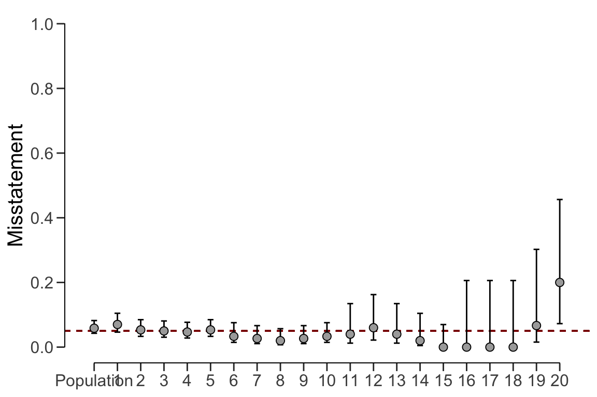

7.3 Approach 3: Partial pooling
Finally, partial pooling (pooling = "partial") assumes differences and
similarities between strata. This allows the auditor to differentiate between
strata, while also sharing information between the strata to reduce uncertainty
in the population estimate. The call below evaluates the sample using a Bayesian
stratified evaluation procedure, in which the stratum estimates are
poststratified to arrive at the population estimate.
set.seed(1) # Important because the posterior distribution is determined via sampling
result_pp <- evaluation(
materiality = 0.05, method = "binomial", prior = TRUE,
n = retailer$samples, x = retailer$errors, N.units = retailer$items,
alternative = "two.sided", pooling = "partial"
)
summary(result_pp)
#
# Bayesian Audit Sample Evaluation Summary
#
# Options:
# Confidence level: 0.95
# Population size: 144000
# Materiality: 0.05
# Hypotheses: H₀: Θ = 0.05 vs. H₁: Θ ≠ 0.05
# Method: binomial
# Prior distribution: Determined via MCMC sampling
#
# Data:
# Sample size: 2575
# Number of errors: 115
# Sum of taints: 115
#
# Results:
# Posterior distribution: Determined via MCMC sampling
# Most likely error: 0.043714
# 95 percent credible interval: [0.034206, 0.053522]
# Precision: 0.0098086
# BF₁₀: 0.019031
#
# Strata (20):
# N n x t mle lb ub precision
# 1 5000 300 21 21 0.04809 0.03814 0.08017 0.03207
# 2 5000 300 16 16 0.04569 0.03328 0.06816 0.02247
# 3 5000 300 15 15 0.04497 0.03207 0.06407 0.01909
# 4 5000 300 14 14 0.04433 0.03043 0.06220 0.01787
# 5 5000 300 16 16 0.04620 0.03281 0.06708 0.02088
# 6 5000 150 5 5 0.04348 0.02367 0.05968 0.01620
# 7 5000 150 4 4 0.04126 0.02088 0.05677 0.01551
# 8 5000 150 3 3 0.04164 0.01846 0.05501 0.01337
# 9 5000 150 4 4 0.04229 0.02137 0.05677 0.01448
# 10 5000 150 5 5 0.04181 0.02328 0.05844 0.01663
# 11 10000 50 2 2 0.04410 0.02417 0.06688 0.02278
# 12 10000 50 3 3 0.04418 0.02616 0.07366 0.02948
# 13 10000 50 2 2 0.04318 0.02261 0.06669 0.02351
# 14 10000 50 1 1 0.04280 0.01993 0.06367 0.02087
# 15 10000 50 0 0 0.04234 0.01641 0.05928 0.01694
# 16 10000 15 0 0 0.04331 0.02039 0.06699 0.02369
# 17 10000 15 0 0 0.04424 0.02027 0.06700 0.02276
# 18 10000 15 0 0 0.04330 0.01984 0.06587 0.02257
# 19 10000 15 1 1 0.04293 0.02313 0.07342 0.03049
# 20 4000 15 3 3 0.04527 0.03047 0.10417 0.05889In this case, the output shows that the estimate of the misstatement in the population is 4.34%, with the 95% credible interval ranging from 3.45% to 5.33%. Note that this population estimate is substantially less uncertain than that of the no pooling approach. Note that, like in the no pooling approach, the stratum estimates are different from each other but lie closer together and are less uncertain.
plot(result_pp, type = "estimates")
The prior and posterior distribution for the population misstatement can be
requested via the plot() function.
plot(result_pp, type = "posterior")